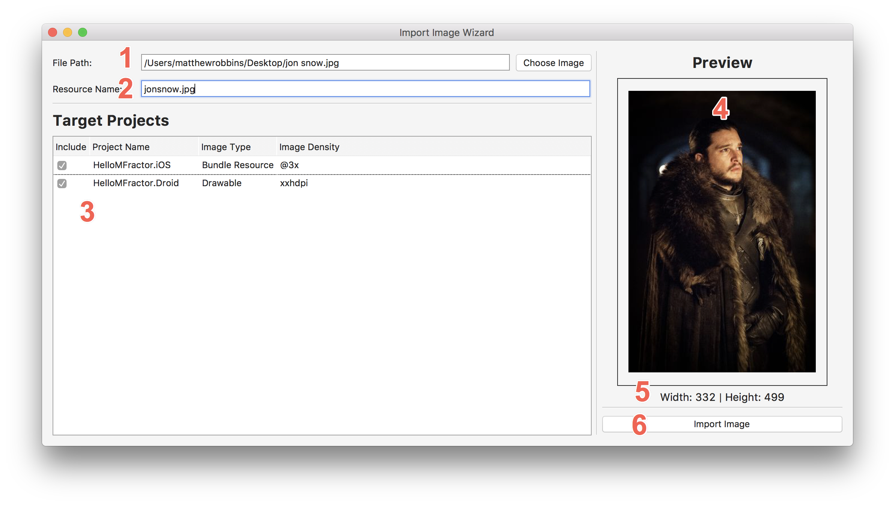

Working With Images
Using MFractors image tooling to simplify working with your apps image resources
Using The Image Wizard
When an Android and/or iOS project is within the active solution, the image wizard will become available.
To access the image wizard, go to the Tools menu and then select Import Image Wizard:

Let's examine each section of the image wizard:

- 1: The file path selecter is used to choose your source image. Once chosen, it will appear as preview in the image pane to the right. MFractor supports importing png, jpg and jpeg images.
- 2: The new name of this image resource. MFractor will warn you when the new image name contains characters that are invalid for an Android resource name. You can correct these naming issues using the "Fix Image Name" wand.
- 3: The iOS and Android projects that you want to import the new image into. Here you can include or exclude certain projects, choose the image type (
Bundle Resourcefor iOS,MipMaporDrawablefor Android) and select density the image represents. - 4: The image preview window will display the image you have chosen to import.
- 5: The width and height of the image that will be imported.
- 6: Click the Import Image button to import the image!
When you click import, the new image jonsnow.jpg will be placed into the selected projects:

Image Downscaling
When importing a new image resource, MFractor will automatically generate lower resolution versions of the image based on the Image Density you specific per project.
For iOS, MFractor uses the following scales and names:
| Name | Output | Relative Scale | Example |
|---|---|---|---|
| @1x | myimage.png | 1 | Resources\myimage.png |
| @2x | myimage@2x.png | 2 | Resources\myimage.png |
| @3x | myimage@3x.png | 3 | Resources\myimage.png |
For Android, MFractor uses the following scales and names:
| Name | Output | Relative Scale | Example |
|---|---|---|---|
| ldpi | *-ldpi\myimage.png | 0.75 | Resources\drawable-ldpi\myimage.png |
| mdpi | *-mdpi\myimage.png | 1 | Resources\drawable-mdpi\myimage.png |
| hdpi | *-hdpi\myimage.png | 1.5 | Resources\drawable-hdpi\myimage.png |
| xhdpi | *-xhdpi\myimage.png | 2 | Resources\drawable-xhdpi\myimage.png |
| xxhdpi | *-xxhdpi\myimage.png | 3 | Resources\drawable-xxhdpi\myimage.png |
| xxxhdpi | *-xxxhdpi\myimage.png | 4 | Resources\drawable-xxxhdpi\myimage.png |
Say you chose @3x and xxhdpi as your source densities when importing a new image with the resolutions of 1000w by 1000h, MFractor would generate the following sizes:
iOS
@3x: 1000w by 1000h (@3x/@3x)@2x: 666w by 666h (@2x/@3x)@1x: 333w by 333h (@1x/@3x)
Android
xxhdpi: 1000w by 1000h (xxhdpi/xxhdpi)xhdpi: 666w by 666h (xhdpi/xxhdpi)hdpi: 500w by 500h (hdpi/xxhdpi)mdpi: 333w by 333h (mdpi/xxhdpi)ldpi: 250w by 250h (ldpi/xxhdpi)
Image Type Conversion
MFractor will the automatically convert images between formats.
If you provide a png image as the source image but change the image name to export a jpg, MFractor will automatically convert the png to a jpg.
Accessing The Image Wizard From XAML
When you are developing a UI with XAML, the image wizard can be opened from a missing image resource.
To activate the image wizard from XAML, assign a missing image resource into an ImageSource attribute and then activate the "Import Image" quick fix:

Here you can select the image you want to import, specify the projects to place the image into, choose the image size and then import the new image.